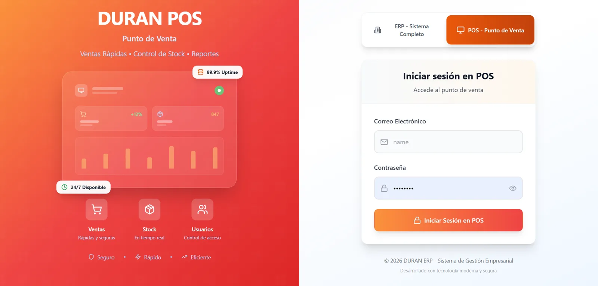
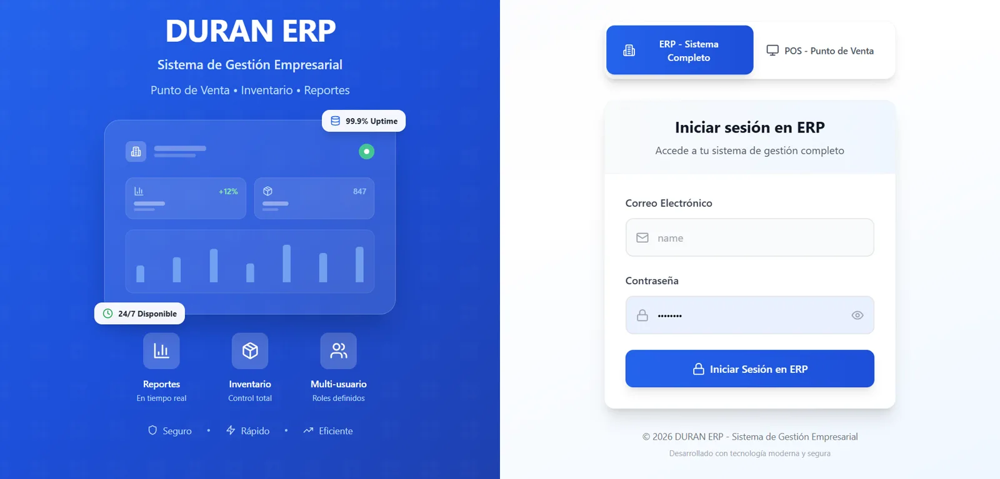

Sistema empresarial · ERP y punto de venta
Frutas
Finas Durán
Software a la medida para la operación diaria de un negocio de frutas y verduras: lo que entra, lo que se vende y lo que se debe, conectado en un mismo sistema.
- Punto de venta
- ERP
- Ventas
- Inventario
- Compras y proveedores
- Clientes y crédito
- Gastos y cuentas
- Reportes
- Dashboard ejecutivo La operación completa en una sola vista.
- Módulos Almacén, reportes, contabilidad, ventas y clientes.
- Indicadores Ingresos, gastos, utilidad neta y productos activos.
- Análisis Tendencia mensual de ventas contra gastos.
- Alertas Stock bajo, estado de la base de datos y meta del mes.
- Movimientos Ventas y gastos recientes con su estado de pago.
Dos accesos,
un mismo sistema.


- ERP y punto de venta
- Inventario
- Ventas
- Compras y proveedores
- Clientes y crédito
- Reportes de operación